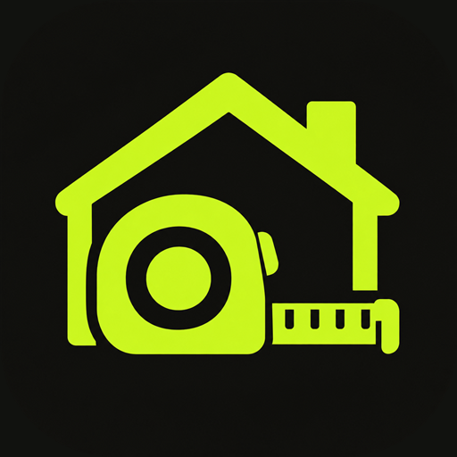
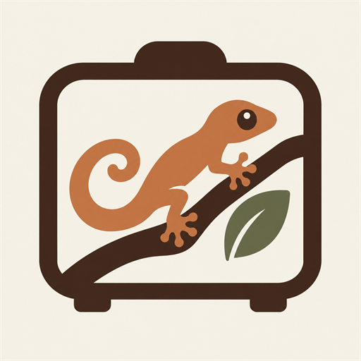

FinStat
Pierwsza wersja testowa porządkuje codzienne finanse
Konta, operacje, statystyki, limity i płatności cykliczne działają już razem lokalnie na telefonie. Teraz sprawdzamy przepływ i przygotowujemy projekt do dalszych testów.
Tworzymy mobilne narzędzia do spraw, które dziś zabierają za dużo czasu. Proste, konkretne i blisko codzienności.
Narzędzia na co dzień
Wybierz to, co pasuje do Twojej codzienności. Resztę zostaw aplikacji.

W Google PlayPraca i remonty
Od pierwszego pomiaru do ostatniego rozliczenia. Cały remont pod kontrolą.
 W rozwoju
W rozwojuZa kierownicą
Zarobki, koszty i wynik tygodnia. Wiesz, po co jedziesz.

W rozwojuHodowla i opieka
Karmienie, waga i klimat. Codzienność Twojego terrarium w jednym miejscu.
Finanse osobiste
Konta, wydatki i plany. Pełny obraz finansów bez łączenia z bankiem.
 W testach
W testachDziennik i nawyki
Twoje myśli, małe rytuały i wspomnienia. Z dnia na dzień bliżej siebie.
01
Nasze podejście
Apscento powstało z prostej obserwacji: wiele codziennych problemów nadal rozwiązujemy kartką, kalkulatorem albo pamięcią. Szukamy właśnie takich momentów i zamieniamy je w przejrzyste aplikacje.
Ze studia
Bez wielkich zapowiedzi. Krótkie i uczciwe informacje o tym, nad czym pracujemy.
Konta, operacje, statystyki, limity i płatności cykliczne działają już razem lokalnie na telefonie. Teraz sprawdzamy przepływ i przygotowujemy projekt do dalszych testów.
Testujemy pierwszą wersję Osnowy na Androida: poranne i wieczorne wpisy, nawyki, kalendarz oraz zdjęcie dnia.
Prototyp VivStat zapisuje zbiorniki, mieszkańców i wpisy dziennika lokalnie na telefonie, wysyła przypomnienia o karmieniu i pozwala zrobić kopię zapasową danych.
Pierwsza publiczna wersja łączy klientów, pomiary, wyceny, materiały, rozliczenia, PDF-y, kopie zapasowe i kalendarz. Aplikację można już pobrać na Androida.
Powstał podstawowy panel statystyk kierowcy i mechanizm szacowania wyniku tygodnia. Kolejny krok to testy i dopracowanie codziennej obsługi.
Bądźmy w kontakcie
Napisz, jeśli chcesz porozmawiać o aplikacji, zgłosić potrzebę albo śledzić rozwój naszych projektów.